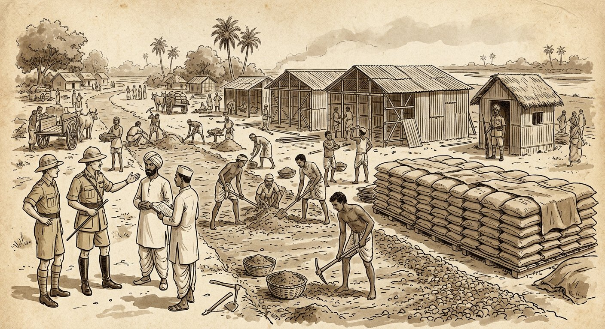

Indian Contract Act, 1872 — Chapter V (Ss. 68–72): obligations resembling contract — necessaries, reimbursement, non-gratuitous acts (S. 70), finder of goods, mistake/coercion | Information Technology Act, 2000 — Ss. 3–5, 10–17: e-signatures, attribution, acknowledgement, time/place of receipt (S. 13), e-contract validity. Comprehensive deep notes anchored in DU Case Material (2023) — Case 40 B.K. Mondal (Book pp. 211–223) in full, Cases 41–42 per syllabus — with full statutory text, elements, flowcharts, hypothetical case visuals, and DU-pattern PYQs with model answers.
📚 Primary source: DU Case Material LB-102 (2023)📜 Bare Acts: ICA Ch. V + IT Act 2000⚖️ 3 cases in full IRAC++ format📝 12 PYQs + best model answers
Quasi-contract ("as if contract") = an obligation imposed by law — not by the parties' agreement — where justice demands that one who has received a benefit pay for it. ICA Chapter V is headed "Of certain relations resembling those created by contract": there is no offer, no acceptance, no consensus — the law invents a contractual-type duty to prevent unjust enrichment ("What S. 70 prevents is unjust enrichment" — Mondal, para 21).
Real contract Agreement (offer + acceptance) → obligation
vs
Quasi-contract No agreement → law imposes obligation (benefit + justice)
vs
No obligation Officious/gift/gratuitous acts → no recovery
Classification — the five statutory species (Ss. 68–72)
Section
Situation
Liability imposed
DU anchor
S. 68
Necessaries supplied to a person incapable of contracting (minor, lunatic) or his dependants.
Reimbursement from the property of the incapable person (not personal liability).
Ills. (a)–(b); Mohori Bibee link; minor excluded from S. 70 (Mondal para 21).
S. 69
Person interested in payment of money which another is bound by law to pay, pays it.
Reimbursement by the other.
Zamindar-lease illustration; "bound by law" + "interested" tests.
S. 70 ⭐
Person lawfully does/delivers something for another, not gratuitously, and the other enjoys the benefit.
Compensation or restoration.
B.K. Mondal — the charter case (Parts C–D).
S. 71
Finder of goods takes them into custody.
Same responsibility as a bailee (Ss. 151–152, 168–169).
Duty of care; no reward except offered (S. 168).
S. 72
Money paid / thing delivered by mistake or under coercion.
Must repay/return it.
Ills. (a)–(b); mistake of law included; coercion wider than S. 15.
Why "resembling" matters (Mondal, para 14): Chapter V "does not deal with rights or liabilities accruing from contract" — so a S. 70 plaintiff cannot sue for specific performance or breach damages; only compensation/restoration for accepted benefit. The cause of action is voluntary acceptance + enjoyment, not any promise.
⭐ Exam opener for any quasi-contract answer: "A quasi-contract is not a contract at all — it is a duty fastened by law on a party unjustly enriched at another's expense. The five instances are codified in Ss. 68–72, ICA…" Then apply the specific section's elements.
Part B — Chapter V, ICA (verbatim + elements)
Ss. 68–72 — the five obligations in detail ⭐⭐⭐
S. 68 — Claim for necessaries supplied to person incapable of contracting ⭐⭐
Text: "If a person, incapable of entering into a contract, or any one whom he is legally bound to support, is supplied by another person with necessaries suited to his condition in life, the person who has furnished such supplies is entitled to be reimbursed from the property of such incapable person." Ill. (a): A supplies B, a lunatic, with necessaries — reimbursed from B's property. Ill. (b): A supplies the wife and children of B, a lunatic — reimbursed from B's property.
Element
Detail (exam points)
"Incapable of contracting"
Minor (S. 11) or unsound mind (S. 12: lunacy, idiocy, drunkenness). His agreements are void (Mohori Bibee) — S. 68 is the statute's substitute remedy for suppliers.
"Legally bound to support"
Wife, children, and (by personal law) aged parents/dependants. Ill. (b) covers wife + children.
"Necessaries suited to condition in life"
Two-fold test: (i) capable of being necessary (food, clothing, lodging, education, medical care, legal defence) — question of law; (ii) actually needed in the person's rank/circumstances — question of fact. Luxury goods, racing debts, diamonds for an infant already stocked = not necessaries.
"From the property" only
No personal liability — decree only against the minor's/lunatic's estate. If no property, supplier recovers nothing. (Contrast: adult's liability is personal.)
Relation to S. 70
Minor is outside S. 70 — "his case has been specifically provided for by S. 68" (Mondal para 21, citing Bankay Behari v Mahendra Prasad); voluntary acceptance — S. 70's foundation — can't fairly be imputed to a minor.
S. 69 — Reimbursement of person paying money due by another ⭐⭐
Text: "A person who is interested in the payment of money which another is bound by law to pay, and who therefore pays it, is entitled to be reimbursed by the other." Illustration: B holds land on lease from zamindar A; A's revenue arrears put the land up for Government sale, which would annul B's lease; B pays A's dues to save his lease → A must make good the amount.
Element
Detail
"Bound by law to pay"
The other's liability must be a legal duty (statute, decree, revenue law) — not merely moral. Bona fide belief tested on facts; payment under a disputed but enforced demand still qualifies where law compels.
"Interested in the payment"
Payer must have a legal interest to protect (B's lease; a surety; a co-sharer; a buyer of equity of redemption) — a mere volunteer/officious payer gets nothing. Interest must exist at the time of payment.
Payment, not promise
S. 69 requires actual payment; undertaking to pay is insufficient. Reimbursement = amount actually paid (with interest where equity allows).
Classic applications
Tenant paying landlord's revenue; mortgagor's dues paid by puisne mortgagee; surety paying creditor (also S. 145); co-defendant paying decretal sum.
S. 70 — Obligation of person enjoying benefit of non-gratuitous act ⭐⭐⭐
Text (memorise): "Where a person lawfully does anything for another person, or delivers anything to him, not intending to do so gratuitously, and such other person enjoys the benefit thereof, the latter is bound to make compensation to the former in respect of, or to restore, the thing so done or delivered." Ill. (a): tradesman leaves goods at B's house by mistake; B treats them as his own → must pay. Ill. (b): A saves B's property from fire — no compensation if done gratuitously.
The three requisites (G.K. Mitter J., approved in Mondal): (i) lawfully done/delivered; (ii) not intended gratuitously; (iii) benefit enjoyed. Full master analysis — Mondal principles, "lawfully", voluntariness, Government liability — in Part C.
S. 71 — Responsibility of finder of goods ⭐
Text: "A person who finds goods belonging to another, and takes them into his custody, is subject to the same responsibility as a bailee." — Read with Ss. 151–152 (ordinary prudent care; no liability for loss without negligence), S. 168 (may sue for specific reward offered; may retain goods as lien till reward paid) and S. 169 (may sell if commonly saleable and owner untraceable, or goods perishable, or lawful charges = ⅔ value).
Point
Detail
No duty to pick up
S. 71 bites only if the finder takes custody — he may walk away. Custody = deemed bailment.
Duties
Reasonable care (S. 151); reasonable efforts to find owner; no use, no mixing, no denial of title.
Rights
No general reward — only reward specifically offered (S. 168) + lien till paid; right of sale in stated cases (S. 169).
S. 72 — Liability of person paid by mistake or under coercion ⭐⭐
Text: "A person to whom money has been paid, or anything delivered, by mistake or under coercion, must repay or return it." Ill. (a): A and B jointly owe C Rs 100; A pays; B, not knowing, pays again → C must repay B. Ill. (b): railway refuses goods except on illegal excess charge; consignee pays to get goods → recovers the excess.
Point
Detail
"Mistake" = fact or law
S. 72 covers both — since Seth Kanhaya Lal v National Bank / sales-tax refund line (STO v Kanhaiya Lal Mukundlal Saraf, AIR 1959 SC 135: tax paid under unconstitutional levy recoverable). Contrast S. 21 (mistake of law no excuse for the promisor) — S. 72 protects the payer. Money paid with full knowledge (without protest, "voluntary") is not recoverable.
"Coercion" wider than S. 15
Not confined to IPC-offence/detention threats — any compulsion of circumstance: illegal levy to release goods (Ill. b), excess freight, payment under protest to avoid seizure. Paid voluntarily with knowledge = no recovery.
Must repay/return
Restitution of the exact sum/thing; bona fide purchaser for value without notice and change-of-position equities may defend (general restitution principles).
Burden
Plaintiff proves (i) payment/delivery, (ii) mistake or coercion. Defendant may show voluntary informed payment.
⚠️ S. 68 vs S. 70 (favourite trap): supplier of necessaries to a minor sues under S. 68 (property only) — S. 70 is unavailable against minors. Government, conversely, is under S. 70 though it enjoys no S. 68-type shield (Mondal para 21: minor analogy rejected — S. 175(1) gives Government contracting power; only the manner is regulated).
Part C — The heart of Topic 10
S. 70 master analysis — the Mondal principles ⭐⭐⭐
State of West Bengal v B.K. Mondal is the charter on S. 70. Gajendragadkar J. (majority) + Sarkar J. (concurring) settle its elements, its relation to Government contracts (S. 175(3), GOI Act 1935 — now Art. 299, Constitution), and its limits. Learn this Part as 8 propositions.
Proposition 1 — The three requisites (G.K. Mitter J., approved)
(i) Lawfully done/delivered not forbidden by law; lawful relationship born on acceptance
+
(ii) Non-gratuitous doer did not intend a gift (trade, estimate, prompt bill = proof)
+
(iii) Benefit enjoyed other party voluntarily accepts/uses it
=
Compensation or restoration
Proposition 2 — Cause of action = acceptance + enjoyment, NOT any contract/promise
"The alternative claim is based on the assumption that the contract … was ineffective and … amounted to no contract at all" (para 15). The doer cannot compel acceptance (Government could have ordered demolition), cannot claim specific performance or breach damages — "in the very nature of things claims for compensation are based on the footing that there has been no contract" (para 18). Compensation under S. 70 "may not mean the same thing as … damages for breach of contract" (para 19) — it is quantum meruit for benefit enjoyed, not the contract price as of right.
Proposition 3 — "Lawfully": the Straight J. test rejected
Chedi Lal v Bhagwan Das (Straight J.): "lawfully" needs a pre-existing relation entitling the doer to look for compensation. SC (para 17): rejected — "if one person is entitled by reason of [such] relationship … S. 70 would be hardly necessary." Correct view: "after something is delivered or done … and that thing is accepted and enjoyed, a lawful relationship is born between the two which … gives rise to a claim for compensation." "Lawfully" is not surplusage — thing must not be done fraudulently, dishonestly, officiously (para 18) — but mere absence of a valid contract doesn't make the doing "unlawful".
Proposition 4 — Voluntariness is the safeguard against officious claims
"S. 70 is not intended to entertain claims … by persons who officiously interfere … or who impose on others services not desired" (para 18). The defendant "always has the option not to accept the thing or to return it" (para 14) — citing Jenkins CJ (Suchand v Balaram): courts must be "guarded and circumspect … and not countenance acts or payments that are really officious" (para 23). Test Jenkins' warning + Ill. (b) (gratuitous fire rescue) in every answer.
Proposition 5 — No conflict with S. 175(3) (now Art. 299): separate fields
S. 175(3) / Art. 299 deals with CONTRACTS: how Government must contract (written, executed, expressed in Governor's name)
≠
S. 70 ICA deals with NO-contract cases: compensation where benefit voluntarily enjoyed
→
"S. 70 supplements S. 175(3)" (para 20) — no nullification
Reasoning (paras 15, 19–20): (a) building without a valid contract contravenes nothing — S. 175(3) forbids invalid contracts, not the doing of work; Ill. (a) (goods left by mistake with "B = Government") proves A contravenes nothing. (b) An invalid request is in law no request at all (para 19) — "request is not an element of S. 70 at all". (c) Policy: petty/emergency Government business is routinely done without strict form; denying S. 70 "may even … bring to a standstill the efficient working of Government". The Advocate-General himself confessed a moral obligation — "converted into a legal obligation" by S. 70 (Bachawat J., para 24).
Proposition 6 — Government is under S. 70 (minor analogy rejected)
Mr. Sen: Government, unable to contract except under S. 175(3), is like a minor (outside S. 70). Rejected (para 21): (i) S. 175(1) confers contracting power — only manner regulated; (ii) minor excluded because S. 68 specially provides for him (Bankay Behari FB); (iii) voluntary acceptance can't be imputed to a minor; (iv) "What S. 70 prevents is unjust enrichment and it applies as much to individuals as to corporations and Government."
Proposition 7 — Sarkar J.'s concurrence: no agreement at all + no tacit officer contract
Narrower route: findings showed no agreement whatever — officers had no authority to the respondent's knowledge (Mitter J.: plaintiff "never had any doubt"; Bachawat J.: "no agreement either express or implied … no agreement which is void or discovered to be void"). So the Court need not decide S. 70-under-invalid-Government-contract in the abstract (para 35) — distinguishing 89 Cal LJ 342.
Officers' personal liability? Requests in personal capacity could in theory imply a tacit promise (the classic ferryman illustration, para 37) — but only if "a man of business and experience would consider it reasonable" (para 38; Authoritative Contract Precedent quoted). Here officers expressly said payment by Government after sanction; respondent always looked to Government, never officers → no tacit promise, no officer contract (paras 39–40). Reserved: whether a contractor with a personal remedy against officers could also sue Government (para 36 — "grave doubts").
Requisites satisfied (para 42): benefit taken (urgent need, prompt use); non-gratuitous (trade = construction for payment, estimates + prompt bills, prior paid jobs, Government knew); lawful (para 44 — no law forbids Government taking benefit of work done without any contract; S. 175(3) assumed arguendo to taint only invalid-contract work).
English law unnecessary (para 45; also Ramanandi Kuer, para 12): S. 70's words are clear — "framed … to avoid the niceties of English law" (classic commentaries); S. 175(3) governs only consensual contracts, not law-implied/quasi-contracts.
Proposition 8 — Limits: what S. 70 does NOT do
Limit
Authority
No specific performance / breach damages — compensation or restoration only.
Para 14, 18
No claim against a minor (S. 68 covers him).
Para 21
No claim for officious/unwanted/gratuitous acts; defendant must have had a real option to refuse.
Paras 14, 18, 23; Ill. (b)
Compensation ≠ contract price necessarily; quantum = value of benefit (here undisputed).
Para 19, 24
S. 65 distinguished: S. 65 needs an agreement discovered void / contract becoming void; where there was never any agreement, only S. 70 fits (trial court; Bachawat J.).
Para 4; para 34
Part D — DU Case 40 (Book pp. 211–223)
DU Case 40 ★★ The S. 70 charter — Government liability for non-gratuitous work
State of West Bengal v B.K. Mondal & Sons, AIR 1962 SC 779 (Gajendragadkar J. + Sarkar J. concurring)
S. 70 ICA; S. 175(3), GOI Act 1935 (now Art. 299) | Question: Can a contractor recover under S. 70 for Government-enjoyed works done without a valid Art.299-type contract? | Answer: Yes — three requisites satisfied; S. 70 supplements (not nullifies) S. 175(3); Government bound like anyone. (Appeal dismissed.)

Hypothetical visual — Arambagh/Khanakul (Hooghly), 1944: emergency Civil Supplies godowns, roads and sheds built on officers' requests, used by Government but never paid for.
Facts (detailed)
First (paid) job: 8 Feb 1944 offer → 12 Feb 1944 acceptance: temporary storage godowns at Arambagh (Hooghly) for Civil Supplies Dept.; bill Rs 39,476 paid July 1944.
Disputed works: (a) 7 Apr 1944: SDO Arambagh sought estimate for kutcha road, guard room, office, kitchen, clerks' room; 20 Apr 1944: Addl. Deputy Director allegedly instructed proceeding; bill Rs 2,322/8 (27 Apr 1944). (b) 18 Apr 1944: Asst. Director asked respondent to proceed with storage sheds at Khanakul; bill Rs 17,003. Total suit claim: Rs 19,325 (both bills unpaid).
Pleading: claim (i) on contract, alternatively (ii) under S. 70 (lawful, non-gratuitous, benefit enjoyed). Defence: requests invalid/unauthorised, no S. 175(3)-compliant contract, no privity; vague written statement.
Trial (G.K. Mitter J., 5 issues): no valid contract (for State); S. 70 applies (for respondent); not time-barred; Bengal liability devolved on West Bengal under the Indian Independence (Rights, Property & Liabilities) Order, 1947; S. 65 inapplicable → decree for respondent.
Appeal (S.R. Das Gupta & Bachawat JJ., separate concurring): confirmed; certificate refused → special leave to SC. Sole SC question: applicability of S. 70.
Issues
Are S. 70's three requisites satisfied on these facts?
Does awarding S. 70 compensation circumvent mandatory S. 175(3)?
Is Government, like a minor, outside S. 70's purview?
State (Mr. Sen): (1) Compensating = treating an invalid contract as valid — circumvents S. 175(3). (2) "Lawfully" (read with S. 23) excludes work outside S. 175(3); Chedi Lal: no pre-existing compensable relation. (3) Government = minor (no capacity except as statute permits; Mohori Bibee; Bankay Behari) → outside S. 70. (4) English cases (Young, not Lawford) govern statutory contravention; no implied/quasi-contract possible with Government.
Contractor: works done for urgent Government need, accepted and used; claim assumes no contract — rests on voluntary acceptance + enjoyment; all three requisites proved; quantum never disputed; Government morally bound (A-G's confession).
Decision & reasoning
Gajendragadkar J. (paras 12–24): interpret S. 70 on its own clear words (Ramanandi Kuer — no English-law detour). Three requisites stated (para 14); defendant always had refusal option (could have ordered demolition). Circumvention argument fails: cause of action is acceptance/enjoyment, not the invalid contract; Ill. (a)-with-Government hypothetical; invalid request = no request; separate fields — S. 70 supplements S. 175(3); policy of petty/emergency Government business (para 20). Chedi Lal rejected (para 17). Minor analogy rejected (para 21). Jenkins CJ warning adopted (para 23). Quantum + acceptance undisputed below; A-G's moral-obligation confession noted (para 24).
Sarkar J. concurring (paras 26–45): there was no agreement whatever (officers unauthorised, to respondent's knowledge) — so the abstract invalid-contract question needn't be decided; no tacit officer contract (ferryman test fails — payment expressly to come from Government after sanction); requisites satisfied (trade, estimates, prompt bills, prior paid jobs, urgent need, prompt use); "lawfully" satisfied (no law forbids taking benefit without contract); English law otiose; S. 175(3) covers only consensual contracts.
Order: appeal dismissed (claim decreed).
Ratio / principles evolved: (1) S. 70's gist = lawful + non-gratuitous + voluntarily enjoyed benefit → compensation/restoration, with cause of action in acceptance, not contract. (2) "Lawfully" = lawful relationship born on acceptance (Chedi Lal overruled in effect). (3) S. 70 and S. 175(3)/Art. 299 occupy separate fields — Government liable under S. 70 like any person. (4) Minor-analogy and English-law arguments rejected. (5) No tacit contract inferred unless a reasonable businessman would infer it.
Exam use: cite Mondal for (i) 3 requisites, (ii) "lawfully" meaning, (iii) officiousness safeguard + Jenkins warning, (iv) S. 70 vs Art. 299, (v) Government/minor distinction, (vi) S. 65 vs S. 70 (never-any-agreement → S. 70), (vii) compensation ≠ breach damages.
E-contract = a contract formed, communicated or performed through electronic means — email, websites, EDI, e-auctions, click-wrap. Two statutes combine: the ICA (substance) — proposal, acceptance, consideration, capacity, consent, lawful object (S. 10) — and the IT Act, 2000 (medium) — legal recognition of electronic records/signatures and rules of attribution, acknowledgement, despatch and receipt. S. 10A, IT Act is the bridge: e-formed contracts "shall not be deemed to be unenforceable solely on the ground that … electronic form or means was used."
ICA (what makes a contract) S. 10: agreement + consideration + capacity + free consent + lawful object
Valid if buyer may return for refund on rejecting terms (notice + choice).
EDI / automated systems
Computers transact per pre-programmed instructions (e.g. stock, supply chains).
Attributed to originator under S. 11(c) (auto-programmed system); S. 12 ack rules apply.
Formation mapped: ICA × IT Act
Formation step
ICA rule
IT Act overlay
Proposal
Ss. 3–9: must be communicated; invitation ≠ proposal (website displays usually invitations).
S. 10A: proposal "expressed in electronic form" valid; S. 11: attributed to sender/auto-system.
Acceptance
Ss. 3–9: absolute + unqualified (S. 7), communicated (S. 3–4), prescribed manner.
S. 10A validates e-acceptance; S. 12 (acknowledgement) + S. 13 (time/place of receipt) fix when/where complete.
Communication complete
S. 4: acceptance complete as against proposer when put in transmission; as against acceptor when it comes to proposer's knowledge (postal rule vs receipt rule).
S. 13(2): receipt = entry into designated computer resource (or retrieval); S. 13(3): deemed received at addressee's place of business — P R Transport holds emailed acceptance completes contract there.
Revocation
Ss. 4–6: before communication of acceptance complete.
S. 10A covers revocation "expressed in electronic form"; S. 13 fixes timing.
Writing / signature
ICA rarely needs writing; special statutes do.
S. 4 (e-record = writing if accessible for subsequent reference) + S. 5 (e-signature = signature).
Consideration, capacity, consent, object
Ss. 10–30 apply unchanged (minors clicking "agree" still minors!).
— (IT Act doesn't dilute ICA substance.)
Legislative lineage & exclusions
UNCITRAL Model Law on E-Commerce (1996) is the IT Act's parent — principles of non-discrimination (no denial of effect for electronic form), functional equivalence (e-record ≈ writing; e-signature ≈ signature), and technology neutrality.
First Schedule (IT Act does NOT apply): (1) negotiable instrument (other than a cheque); (2) power of attorney; (3) trust; (4) will / testamentary disposition; (5) contract for sale or conveyance of immovable property or interest therein. ⭐ Favourite short-note/exam trap.
2008 amendments (Act 10 of 2009): "digital signature" → technology-neutral "electronic signature"; new S. 3A (reliable ES techniques, Second Schedule); new S. 10A (e-contract validity); Ss. 14–16 updated to ES.
Model formation answer: (1) Identify proposal/acceptance in the electronic exchange. (2) Test S. 7 ICA (absolute, unqualified — Timex). (3) Apply S. 10A (no unenforceability for electronic form). (4) Fix time/place via S. 13 (P R Transport). (5) Check remaining S. 10 ICA elements + First Schedule exclusion.
Part F — The legislative framework
IT Act, 2000 — Ss. 3–5, 10–17 in detail ⭐⭐⭐
Gateway definitions (S. 2(1)) — learn functionally
Term
Meaning (substance)
Electronic record — S. 2(1)(t)
Data/record/image/sound generated, sent, received or stored in electronic form (incl. microfilm, computer printouts).
Electronic signature — S. 2(1)(ta)
Authentication of an e-record by a subscriber by technique in the Second Schedule (incl. digital signature).
Originator — S. 2(1)(za)
Person who sends, generates, stores or transmits an e-record (excludes intermediary — S. 2(1)(w): one who merely receives/stores/transmits on behalf of another).
Addressee — S. 2(1)(b)
Person intended by originator to receive the e-record (excludes intermediary).
Computer resource — S. 2(1)(k)
Computer, communication system, network, data, software — the "designated computer resource" of S. 13 (e.g. notified email inbox/server).
Subscriber / Certifying Authority / Controller
Subscriber (S. 2(1)(zg)): holder of a signature certificate. CA (S. 2(1)(g)): licensed issuer of certificates (S. 24+). Controller (Ss. 17–25): regulator of CAs.
Chapter II — Authentication & legal recognition (Ss. 3–5)
S. 3 — Authentication of electronic records (digital signatures). (1) A subscriber may authenticate an e-record by affixing his digital signature. (2) Authentication effected by asymmetric crypto system + hash function enveloping/transforming the record (hash = one-way algorithm; same input → same hash; computationally infeasible to reverse or to find two records with same hash). (3) Anyone may verify with the subscriber's public key. (4) Private + public keys are unique to the subscriber (functioning key pair).
S. 3A — Electronic signature (2008, technology-neutral). A subscriber may authenticate by any reliable ES technique specified in the Second Schedule. Reliable = (a) signature-creation data linked to signatory alone; (b) under his sole control at signing; (c) later alterations to signature detectable; (d) later alterations to information detectable. Government may prescribe ascertainment procedure; notifications laid before Parliament.
S. 4 — Legal recognition of electronic records. Where any law requires writing / typewritten / printed form, the requirement is satisfied if matter is (a) rendered in electronic form and (b) accessible for subsequent reference. S. 5 — Legal recognition of electronic signatures. Where any law requires authentication by signature, an electronic signature affixed per Government rules satisfies it.
S. 10 & S. 10A — rulemaking + e-contract validity ⭐⭐
S. 10 — Power to make rules re electronic signature. Central Government may prescribe (a) type of ES; (b) manner/format of affixing; (c) identification procedure; (d) integrity/security/confidentiality controls; (e) any other matter giving legal effect to ES. S. 10A — Validity of contracts formed through electronic means (2008) ⭐. "Where in a contract formation, the communication of proposals, the acceptance of proposals, the revocation of proposals and acceptances … are expressed in electronic form or by means of electronic records, such contract shall not be deemed to be unenforceable solely on the ground that such electronic form or means was used."
S. 10A decoded: (i) It validates the medium, not a bad bargain — ICA S. 10 substance still needed. (ii) "Solely" = e-form can't be the only ground of attack (minor, no consideration, etc. still kill). (iii) Covers the whole formation cycle: proposal → acceptance → revocation of either. (iv) Pair with Timex (concluded e-contract) + P R Transport (e-acceptance completes contract).
Chapter IV — Attribution, acknowledgement, despatch (Ss. 11–13) ⭐⭐⭐
S. 11 — Attribution. An e-record is attributed to the originator if sent (a) by himself; (b) by a person authorised to act for him; or (c) by an information system programmed by/on behalf of the originator to operate automatically. S. 12 — Acknowledgment of receipt. (1) Unless a particular form/method stipulated, ack may be by any communication (automated or otherwise) or any conduct showing receipt. (2) If originator stipulated binding-only-on-ack, then without ack the record is deemed never sent. (3) Otherwise, if no ack within specified/agreed/reasonable time, originator may notice + fix reasonable time, and then (after notice) treat it as never sent. S. 13 — Time and place of despatch and receipt ⭐. (1) Despatch = when record enters a computer resource outside originator's control. (2) Receipt: (a) designated resource → entry into it (non-designated resource → retrieval by addressee); (b) no designated resource → entry into addressee's resource. (3) Place: deemed despatched at originator's place of business, received at addressee's place of business. (4) Applies though the computer resource sits elsewhere. (5) Multiple business places → principal one; none → usual residence (body corporate: place of registration). All "save as otherwise agreed".
Who sent it? S. 11: self / agent / auto-system
→
Ack needed? S. 12: stipulated? → binding only on ack; else notice + reasonable time
→
When received? S. 13(2): designated entry / retrieval
→
Where received? S. 13(3): addressee's place of business → contract complete there
Chapter V — Secure records & signatures; Controller (Ss. 14–17)
S. 14 — Secure electronic record. Where a security procedure is applied at a specific time, the record is deemed secure from then till verification. S. 15 — Secure electronic signature. An ES is deemed secure if (i) signature-creation data was under exclusive control of signatory at affixing; (ii) stored/affixed in the prescribed exclusive manner. (Secure ES/records attract presumptions under the Bharatiya Sakshya Adhiniyam, 2023 — formerly Evidence Act Ss. 85B–C.) S. 16 — Security procedures and practices. Central Government may prescribe them for Ss. 14–15, having regard to commercial circumstances, nature of transactions and related factors. S. 17 — Appointment of Controller. Central Government may appoint (by Gazette) a Controller of Certifying Authorities + Deputy/Assistant Controllers, officers, staff; Controller functions under Government's general control; qualifications/terms prescribed; offices + seal as specified. (Ss. 18–25 detail functions, recognition of CAs, licences, etc.)
Part G — DU Case 41 (syllabus; full judgment AIR 2006 All 23)
DU Case 41 ★★ E-acceptance completes contract where received (S. 13 IT Act)
P R Transport Agency v Union of India, AIR 2006 All 23 (Allahabad HC — Harkauli & Pandey JJ., 24 Sept 2005)
S. 13 IT Act; S. 28 ICA; Art. 226 | Questions: (i) Where is an emailed tender-acceptance received? (ii) Can an ouster clause kill Art. 226? (iii) Was belated cancellation lawful? | Answers: (i) At addressee's place of business — U.P. courts have jurisdiction; (ii) No — ouster clauses touch civil courts only; (iii) No — concluded contract + estoppel + natural justice. (Writ allowed; coal to be delivered.)
Hypothetical visual — July 2005: a 4,000 MT coal lot at Dobari Colliery won in e-auction; acceptance arrives by email; Rs 81.12 lakh deposited — then a bolt-from-the-blue cancellation.
Facts (detailed)
E-auction: Respondents 2–3 (State coal entities) e-auctioned coal lots. Petitioner's bid — 4,000 MT from Dobari Colliery @ Rs 1,625/MT — accepted; acceptance letter emailed 19 July 2005 to petitioner's email address.
Performance: Acting on acceptance, petitioner deposited Rs 81,12,000 by cheque (28 July 2005), which respondent 3 accepted and encashed.
Cancellation: Respondent 4 emailed 10 Aug 2005: sale + auction "cancelled due to some technical and unavoidable reasons" — challenged in this writ (Annexure I). Interim order 13 Sept 2005 preserved the coal. Real reason (counsel, on instructions): a slightly higher third-party bid was lost to a computer/programme/data-feeding flaw; the third party never challenged anything and wasn't before Court.
Preliminary objections (Madhur Prakash): (1) no cause of action in U.P.; (2) none pleaded; (3) cl. 10.5 ousts jurisdiction to Jharkhand HC ("any dispute … shall be subject to jurisdiction of Jharkhand HC"). Petitioner filed a second supplementary affidavit (partnership deed 7 July 2000): principal place of business Chandauli, only other place Varanasi — both in U.P.; acceptance received by email there.
Issues
Is the supplementary affidavit admissible?
Where is emailed acceptance "received" — and does part of the cause of action arise in U.P.?
Does cl. 10.5 oust Allahabad HC's Art. 226 jurisdiction?
Was the cancellation valid on merits?
Petitioner (Manish Goyal): acceptance received by email at Chandauli → contract complete in U.P. (S. 13(3) IT Act) → part of cause of action in U.P.; ouster clause can't touch Art. 226; concluded contract + money deposited → cancellation illegal.
Respondents (Madhur Prakash): no U.P. cause of action pleaded; supplementary affidavit belated (facts always known); cl. 10.5 confines disputes to Jharkhand; cancellation justified by the lost higher bid (computer flaw).
Decision & reasoning
(1) Supplementary affidavit allowed (para 5): the "known-facts" objection exists only for review (O.47 R.1(a)), additional evidence in appeal (O.41 R.27(1)(aa)), and readiness/willingness amendments (S. 16(1)(c), Specific Relief Act) — "we are not aware of any other principle" barring additional facts in writs.
(2) S. 13(3) fixes receipt (paras 6–10): Settled common law rule (telephone/telex/fax: contract complete when/where acceptance received) needs fixed terminals; email has no fixed point (transmitted from anywhere → server anywhere → retrieved anywhere). S. 13(3) solves it: deemed received at addressee's place of business → Varanasi/Chandauli → contract complete in U.P. → part of cause of action → territorial jurisdiction. ⭐
(3) Ouster clause fails twice (paras 11–20): (a) S. 28 ICA + ABC Laminart: confining jurisdiction needs "alone/only/exclusive" or expressio unius; cl. 10.5 ("subject to Jharkhand HC") doesn't oust. (b) Deeper: ouster clauses restrain parties from approaching other civil courts; but Art. 226 judicial review is a basic feature (L. Chandra Kumar) exercisable even suo motu — "cannot be curtailed … by an agreement between litigants." Ouster clauses oust civil courts only.
(4) Merits (paras 21–27): concluded contract (acceptance + encashed Rs 81.12 lakh); promissory estoppel (petitioner altered position to its disadvantage); respondents are State (Art. 12); belated cancellation without hearing violates natural justice. Third party's absence kills the defence.
Order: writ allowed; 10 Aug 2005 communication + decision set aside; respondents 2–3 to hand over the coal without delay.
Ratio: (1) Emailed acceptance is deemed received at the addressee's place of business (S. 13(3)), completing the contract there for jurisdiction/cause of action. (2) Forum-ouster clauses cannot exclude Art. 226. (3) Accepted e-auction bids + acted-upon consideration = concluded contract; State cancellation needs hearing.
Exam use: the lead authority for (i) S. 13 time/place of e-receipt, (ii) "no fixed point" email reasoning, (iii) S. 28/ABC Laminart ouster tests, (iv) Art. 226 vs contract clauses, (v) e-auction concluded contracts + estoppel.
Part H — DU Case 42 (syllabus; (2010) 3 SCC 1)
DU Case 42 ★★ Concluded contract + arbitration clause through emails alone
Timex International FZE Ltd., Dubai v Vedanta Aluminium Ltd., (2010) 3 SCC 1 (SC — Sathasivam J., Arb. Pet. 10/2009, 22 Jan 2010)
Ss. 4, 7 ICA; S. 7 + S. 11(6), Arbitration Act 1996 | Question: Did email exchanges conclude a binding bauxite contract (with arbitration clause) without a signed formal agreement? | Answer: Yes — unconditional 16 Oct 2007 email acceptance concluded all essential terms; S. 11 petition maintainable. (Arbitrator — Justice B.N. Srikrishna — appointed; venue Mumbai.)
Hypothetical visual — October 2007: a Dubai trader's email offer of bauxite shipments accepted from India; charter and supply chains swing into action — then the buyer denies any contract.
Facts (detailed — sequence is everything)
15 Oct 2007: Timex (Dubai mineral trader) emailed a commercial offer to Vedanta (India) for bauxite supply — option of 2–5 shipments, all essential commercial terms + arbitration clause (Cl. 6); offer valid till noon 16 Oct 2007.
16 Oct 2007: first response carried a rider (cancellation after 2 shipments) = conditional. On request, Vedanta emailed at 3:06 p.m.: "we confirm the deal for five shipments" — unconditional, unqualified. Timex's Mr. Swaminathan opened it → "irrevocable contract concluded".
17 Oct 2007: Timex acted: back-to-back Rio Tinto (Australia) supply deal + Oslo charter-party.
8 Nov 2007: Vedanta sent a formal draft agreement with detailed arbitration clause (Cl. 29); Timex accepted same evening with minor changes. Draft never formally signed.
1 Sept 2008: Timex invoked arbitration claiming losses; Vedanta replied: no concluded contract, no arbitration agreement — still negotiating. Timex filed S. 11(6) petition in SC.
Issues
Did the 15–16 Oct emails conclude a binding contract though no formal agreement was signed?
Was there a valid arbitration agreement "in writing" (S. 7, Arbitration Act)?
Maintainability of S. 11(6) appointment.
Timex: 3:06 p.m. email = absolute, unconditional acceptance (S. 7 ICA) of an offer containing all essentials + arbitration (Cl. 6); knowledge via opening (S. 4 ICA); acted upon (charter + supply); 8 Nov draft merely records the concluded deal (Cl. 29 accepted); emails = "agreement in writing" (S. 7, Arbitration Act); minimal interference (Great Offshore).
Vedanta (C.A. Sundaram): emails only preliminary/negotiation-stage; material terms unsettled; unsigned 8 Nov draft (subject to changes) proves no consensus ad idem; unclear clauses can't "stand on footing" to found arbitration; S. 11 not maintainable without concluded contract.
Decision & reasoning (Sathasivam J.)
Concluded contract on 16 Oct 2007: commercial offer = valid offer; first conditional reply cured by the unconditional 3:06 p.m. confirmation — S. 7 ICA's "absolute and unconditional" mandate fulfilled; S. 4 satisfied on opening. Later performance (charter 17 Oct) corroborates concluded intent.
Unsigned formality irrelevant: "in the absence of signed agreement … possible to infer [contract] from … exchange of emails, letter, telex, telegrams and other means of telecommunication" (para 60). 8 Nov draft = record of concluded deal; minor changes don't negate consensus.
Arbitration agreement exists: Cl. 6 (offer) + Cl. 29 (draft, accepted) exchanged in emails = "agreement in writing" under S. 7, Arbitration Act; Vedanta's precedents "not germane" against clear email materials (para 61).
Relief: S. 11(6) petition maintainable and allowed; Justice B.N. Srikrishna appointed sole arbitrator; venue Mumbai; fees shared.
Ratio: (1) Unconditional email acceptance of an offer containing all essential terms concludes a binding contract — absence of a signed formal agreement is irrelevant. (2) Arbitration clauses travel through email exchanges and satisfy "in writing" (S. 7, Arbitration Act). (3) Subsequent acting-upon + record-drafts confirm consensus; minor modifications don't undo it.
Exam use: cite Timex for (i) e-contract formation/concluded-contract test, (ii) S. 7 absolute-acceptance via email (conditional → unconditional cure), (iii) unsigned-draft irrelevance, (iv) email arbitration clauses, (v) pairing with S. 10A IT Act.
Part I — Visual revision
Master flowcharts & comparison tables
Flowchart 1 — Any S. 70 problem (Mondal method)
1. Lawfully? Not fraudulent/dishonest/forbidden? (No pre-existing relation needed)
→
2. Non-gratuitous? Trade/estimate/bill/protest? (Ill. b kills gifts)
→
3. Enjoyed voluntarily? Had a real option to refuse/return? (Officious → fail)
→
4. Who is defendant? Minor → S. 68 only · Govt/corp/individual → S. 70 ✔
→
5. Relief Compensation (benefit value) or restoration — NOT breach damages
2. First Schedule? Immovable sale/will/trust/POA/NI → IT Act can't save
→
3. S. 10A E-form alone can't defeat validity
→
4. S. 11–13 Attribution? Ack? Time/place of receipt → where complete?
Table 1 — Ss. 68–72 at a glance
Section
Trigger (one line)
Remedy
Key authority
68
Necessaries to incapable person/dependants.
Reimbursement from property.
Ills. (a)–(b); Mohori Bibee
69
Interested person pays another's legal dues.
Reimbursement.
Zamindar illustration
70
Lawful + non-gratuitous + enjoyed act/delivery.
Compensation or restoration.
Mondal; Ills. (a)–(b)
71
Finder takes custody of goods.
Bailee duties (Ss. 151–2, 168–9).
Bailment chapter
72
Payment/delivery by mistake/coercion.
Repay/return.
Ills. (a)–(b); tax-refund line
Table 2 — S. 70 vs S. 65 vs breach damages
Point
S. 70
S. 65
S. 73 (breach)
Needs an agreement?
Never any (or none relied on).
Agreement discovered void / becoming void.
Valid contract broken.
Basis
Voluntary acceptance of benefit.
Restoration of advantage received.
Loss from breach.
Measure
Benefit value / restoration.
Advantage restored.
Natural/contemplated loss.
Table 3 — IT Act Ss. 3–5, 10–17 map
Section
Function
One-line content
3 / 3A
Authenticate
Digital signature (asymmetric crypto + hash) / reliable ES techniques (Second Schedule).
4 / 5
Recognise
E-record = writing (accessible for later reference); ES = signature.
10 / 10A
Rules / Validity
Govt. ES rules; e-formed contracts not unenforceable for e-form alone.
11 / 12 / 13
Who / Ack / When-Where
Attribution (self/agent/auto-system); acknowledgement; despatch/receipt time + deemed places.
14 / 15 / 16
Secure
Secure e-record; secure ES (exclusive control); Government security procedures.
17
Regulate
Controller of Certifying Authorities (+ deputies, offices, seal).
Table 4 — Three cases at a glance
Case
Provision
One-line rule
Outcome
40. Mondal
S. 70
Lawful + non-gratuitous + enjoyed → Government pays; S. 70 supplements Art. 299.
Appeal dismissed; Rs 19,325 decreed
41. P R Transport
S. 13 IT Act
Emailed acceptance received at addressee's business place; ouster ≠ Art. 226.
Writ allowed; coal delivered
42. Timex
S. 7 ICA / S. 7 Arb. Act
Unconditional email acceptance = concluded contract + written arbitration clause.
S. 11 allowed; Srikrishna J. appointed
Part J — Practice
DU PYQs with best model answers (Q1–Q12)
Q1. What are quasi-contracts? Classify the obligations resembling those created by contract under Ss. 68–72, ICA. (15 marks)
Model answer: (1) Define: law-imposed duties without agreement, to prevent unjust enrichment; Ch. V heading. (2) Table all five with trigger + remedy + one illustration each. (3) Stress S. 70 as the residuary workhorse + Mondal gloss. (4) Relief pattern: reimbursement / compensation-or-restoration / bailee duties / repay-return. (5) Close: no specific performance or breach damages under Ch. V (Mondal para 14).
Q2. State and explain the requisites of S. 70 with the help of State of W.B. v B.K. Mondal. (15 marks)
Model answer: (1) Quote S. 70 + Ills. (a)–(b). (2) Three requisites (Mitter J.): lawfully / non-gratuitous / enjoyed — Mondal facts mapped to each (urgent need + prompt use; trade + estimates + bills + prior jobs; no forbidding law). (3) Cause of action = acceptance/enjoyment, not contract — no compulsion, no breach damages. (4) "Lawfully" = born-on-acceptance (Chedi Lal rejected). (5) Voluntariness + Jenkins officiousness warning. (6) Government liable; S. 175(3) separate field. Conclude: appeal dismissed.
Q3. "S. 70 supplements S. 175(3) of the Government of India Act." Discuss. (10 marks)
Model answer: (1) Mr. Sen's circumvention argument (compensating = validating invalid contracts). (2) Rebuttal: S. 175(3)/Art. 299 governs how Government contracts; S. 70 governs no-contract benefit cases — separate fields (para 19). (3) Doing work ≠ making a contract (Ill. (a)-as-Government hypothetical); invalid request = no request. (4) Policy: petty/emergency governance would stall (para 20); A-G's moral-obligation confession converted to legal duty. (5) Sarkar J. narrower route: no agreement whatever — abstract question untouched (para 35).
Q4. A, a contractor, repairs a Government building at an officer's oral request, knowing the officer awaits sanction. Government uses the building but refuses payment citing Art. 299. Advise A. (10 marks)
Model answer: A recovers under S. 70 (Mondal squarely). (1) No Art. 299 contract → sue on acceptance/enjoyment. (2) Requisites: lawful (repair work, no prohibition); non-gratuitous (contractor by trade — estimate + bill); enjoyed (building used; Government could have refused). (3) Officer's lack of authority known → no agreement at all (Sarkar J.) — S. 70 still fits; officers not personally liable (no tacit promise — ferryman test). (4) Relief: compensation (benefit value), not contract price as of right. (5) Caveat: quantum must be proved; S. 65 unavailable (never any agreement).
Q5. Distinguish S. 68 from S. 70. Can a minor be sued under S. 70? (7 marks)
Model answer: (1) S. 68: necessaries → reimbursement from property only; S. 70: any lawful non-gratuitous enjoyed benefit → compensation. (2) No — minor outside S. 70 (Mondal para 21; Bankay Behari FB): S. 68 specifically provides; voluntary acceptance can't be imputed. (3) Government ≠ minor: S. 175(1) confers contracting power; S. 70 binds Government, corporations, individuals alike (unjust-enrichment rationale). (4) Illustration: lunatic's supplier uses S. 68 (Ills. a–b).
Q6. Write short notes on: (a) S. 69, (b) S. 71, (c) S. 72 — mistake of law. (3×5 marks)
Model answer: (a) Quote S. 69 + zamindar illustration; twin tests — "bound by law" (legal duty, not moral) + "interested" (protectable interest, e.g. lease; no volunteers); actual payment needed. (b) Quote S. 71; custody = deemed bailment (S. 151 care; S. 168 offered-reward lien; S. 169 sale); no duty to pick up, no general reward. (c) Quote S. 72 + Ills.; "mistake" covers law and fact (sales-tax refund line — Kanhaiya Lal); "coercion" wider than S. 15 (compulsion of circumstance — Ill. b); voluntary informed payment irrecoverable.
Q7. Discuss the nature and formation of e-contracts with reference to the ICA and the IT Act, 2000. (15 marks)
Model answer: (1) Define e-contracts; dual statute structure (substance/medium) + S. 10A bridge. (2) Types table (email, e-auction, click/browse/shrink-wrap, EDI) with validity notes. (3) Formation mapping: proposal/acceptance/revocation via S. 10A; S. 7 absoluteness (Timex); S. 4 vs S. 13 timing (P R Transport). (4) UNCITRAL lineage (non-discrimination, functional equivalence, technology neutrality). (5) First Schedule exclusions. (6) ICA S. 10 elements unchanged (minor's click still void). Conclude with Timex + P R Transport holdings.
Q8. Explain Ss. 11, 12 and 13 of the IT Act, 2000. (10 marks)
Model answer: (1) S. 11: three attribution routes (self/agent/auto-system); intermediary excluded; fixes who sent. (2) S. 12: ack by any communication/conduct unless form stipulated; binding-only-on-ack → no ack = never sent; else notice + reasonable-time procedure. (3) S. 13: despatch = beyond originator's control; receipt = designated-entry/retrieval/entry; place = business places; computer location irrelevant; principal-place/residence defaults; all subject to contrary agreement. (4) Apply: P R Transport (S. 13(3) → contract complete at Chandauli/Varanasi).
Q9. A emails acceptance of B's tender; B later claims no concluded contract as no formal document was signed. B's office is in Patna, A's in Delhi. Where was the contract completed? (10 marks)
Model answer: (1) S. 10A: email acceptance valid; S. 7 ICA: if absolute/unconditional → concluded (Timex: unsigned formality irrelevant). (2) Completion place: emailed acceptance deemed received at addressee's (B's) place of business — Patna (S. 13(3); P R Transport — no fixed email point; traditional fixed-terminal rule inapplicable). (3) Time: S. 13(2) (designated-resource entry/retrieval). (4) Consequence: part of cause of action at Patna (jurisdiction). (5) Caveats: contrary agreement overrides ("save as otherwise agreed"); revocation before receipt effective (Ss. 4–5 ICA).
Q10. Discuss P R Transport Agency v UOI on (a) ouster clauses and Art. 226, (b) natural justice in State e-auctions. (10 marks)
Model answer: (a) Facts: cl. 10.5 → Jharkhand HC. S. 28 ICA + ABC Laminart: need "alone/only/exclusive" or expressio unius — absent here. Deeper: ouster clauses restrain parties vis-à-vis civil courts; Art. 226 is a basic feature (L. Chandra Kumar), exercisable suo motu — uncurtailable by agreement. (b) Concluded e-auction contract (acceptance + Rs 81.12 lakh encashed) + promissory estoppel (altered position); State-respondents (Art. 12) cancelling belatedly without hearing = natural-justice violation; third-party computer-flaw defence fails (stranger, no challenge). Writ allowed; coal delivery ordered.
Q11. "An arbitration clause can be concluded through emails." Discuss with Timex v Vedanta. (10 marks)
Model answer: (1) Timeline: 15 Oct offer (Cl. 6 arbitration) → conditional reply → 3:06 p.m. unconditional "confirm deal for five shipments" → 17 Oct charter/supply → 8 Nov draft (Cl. 29) accepted with minor changes → denial → S. 11(6). (2) S. 7 ICA fulfilled (absolute/unqualified); S. 4 on opening. (3) Unsigned draft irrelevant (para 60: emails/letters/telex suffice); acting-upon corroborates. (4) Cl. 6 + Cl. 29 = "agreement in writing" (S. 7, Arbitration Act); precedents "not germane". (5) Srikrishna J. appointed; Mumbai venue. Pair with S. 10A IT Act.
Q12. Write short notes on: (a) Ss. 4–5, IT Act, (b) Secure e-record / secure e-signature (Ss. 14–16), (c) First Schedule exclusions. (3×5 marks)
Model answer: (a) S. 4: e-record = writing if electronic + accessible for subsequent reference; S. 5: ES = signature if per Government rules — functional equivalence. (b) S. 14: security procedure applied → deemed secure till verification; S. 15: ES secure if creation data under exclusive control + prescribed manner (evidentiary presumptions, BSA); S. 16: Government prescribes procedures (commercial circumstances). (c) IT Act inapplicable: NI (non-cheque), POA, trust, will, immovable-property sale/conveyance — must use traditional form; favourite trap with S. 10A.
Part K — Last-mile
One-page revision capsule + exam strategy
Must-quote line
Source
"Lawfully … not intending gratuitously … enjoys the benefit → compensation or restoration"
S. 70 (3 requisites)
"What S. 70 prevents is unjust enrichment … individuals, corporations and Government"
Mondal (Gajendragadkar, para 21)
"Guarded and circumspect … not countenance … really officious"
Jenkins CJ (via Mondal para 23)
"S. 70 supplements S. 175(3)" — separate fields
Mondal (para 20)
"Not … unenforceable solely on the ground" of electronic form
S. 10A, IT Act
"Deemed received at the place where the addressee has his place of business"
S. 13(3) + P R Transport
Email has "no fixed point either of transmission or of receipt"
⭐ Exam strategy: (1) Quasi-answers: quote the section, run its elements as numbered tests, cite the illustration, close with Mondal. (2) S. 70 problems: always test officiousness/voluntariness + defendant's capacity (minor → S. 68). (3) E-contract problems: S. 10 ICA substance first, then S. 10A, then S. 11–13 mechanics, then First Schedule check. (4) Pair holdings with judge names: Gajendragadkar/Sarkar (Mondal), Harkauli (P R Transport), Sathasivam (Timex). (5) Traps: S. 65 vs S. 70; "lawfully" ≠ pre-existing contract; S. 13 vs postal rule; ouster vs Art. 226; immovable e-contracts excluded.
Case–judge–court map: 40 Mondal — Gajendragadkar + Sarkar JJ., SC (1962) · 41 P R Transport — Harkauli & Pandey JJ., Allahabad HC (2005) · 42 Timex — Sathasivam J., SC (2010). | Honesty note: DU case material in the project carries Case 40's full text (Book pp. 211–223); Cases 41–42 appear as syllabus entries, so their briefs are built from the full reported judgments (AIR 2006 All 23; (2010) 3 SCC 1) — every proposition above is judgment-text based. Web sources: P R Transport background [1](https://www.casemine.com/judgement/in/5608eb73e4b0149711118a34), [3](https://www.courtkutchehry.com/judgements/341319/pr-transport-agency-vs-union-of-india-uoi-and-others/), [5](https://legal-wires.com/case-study/case-study-p-r-transport-agency-v-union-of-india/); Timex background [2](https://www.rplegal.org/articles/60/view), [4](https://lawfyi.io/trimex-international-fze-vs-vedanta-aluminium-limitedindia-on-22-january-2010-case-summary/); IT Act texts [1](https://www.indiacode.nic.in/bitstream/123456789/13116/1/it_act_2000_updated.pdf), [3](https://www.indiacode.nic.in/bitstream/123456789/13116/1/it_act_2000_updated.pdf).
Topics 10 + 11 • Quasi-Contracts (Ss. 68–72) + E-Contracts (IT Act Ss. 3–5, 10–17) • DU LLB LB-102 • From DU Case Material + ICA/IT Act bare texts • End of notes — all the best for the exam! 🎓